PRÁCTICA 2.2: Autenticación en Nginx
Instalación de paquetes necesarios
Comprobamos que la herramienta openssl está instalada:

En mi caso esta venía instalada por defecto, si no lo estuviera solo habría que instalarla
Creación de usuarios y contraseñas
Creamos un archivo oculto ".htpasswd" donde guardar usuarios y contraseñas, y añadimos nuestro primer usuario "manuel":
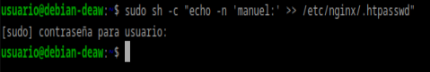
Y a continuación añadimos una contraseña cifrada para este:

He creado dos usuarios, y voy a comprobar si ambos han sido creados y con clave cifrada:
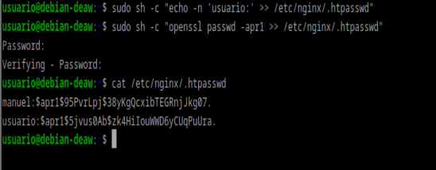
Configurando el servidor Nginx para usar autenticación básica
Utilizaremos la directiva auth_basic dentro del location y le pondremos el nombre a nuestro dominio que será mostrado al usuario al solicitar las credenciales. Por último, configuramos Nginx para que utilice el fichero que previamente hemos creado con la directiva auth_basic_user_file :
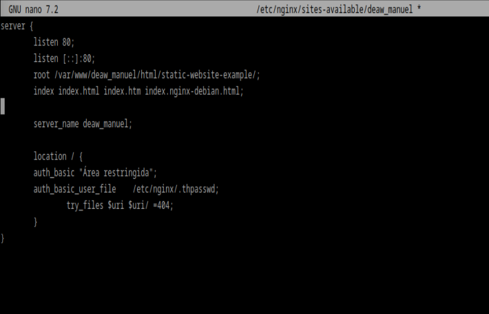
Comprobación 1
Comprueba desde tu máquina física/anfitrión que puedes acceder a http://nombre-sitio-web y que se te solicita autenticación
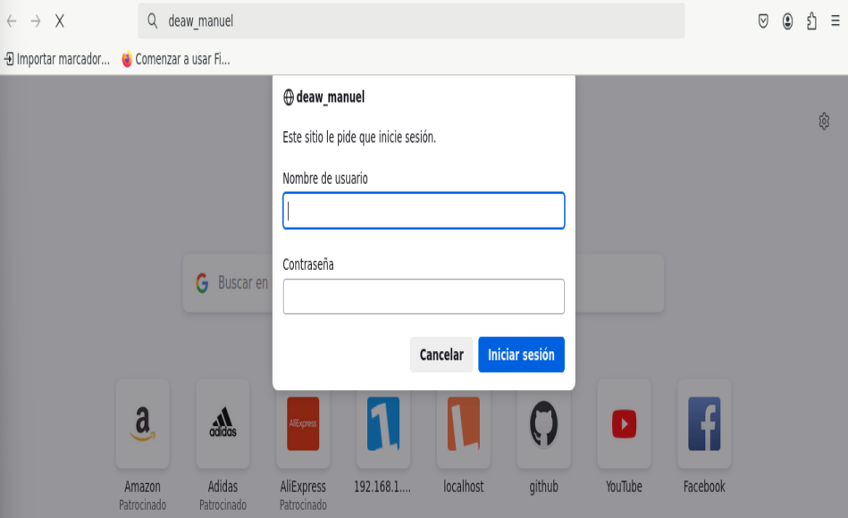
Comprobación 2
Comprueba que si decides cancelar la autenticación, se te negará el acceso al sitio con un error. ¿Qué error es?
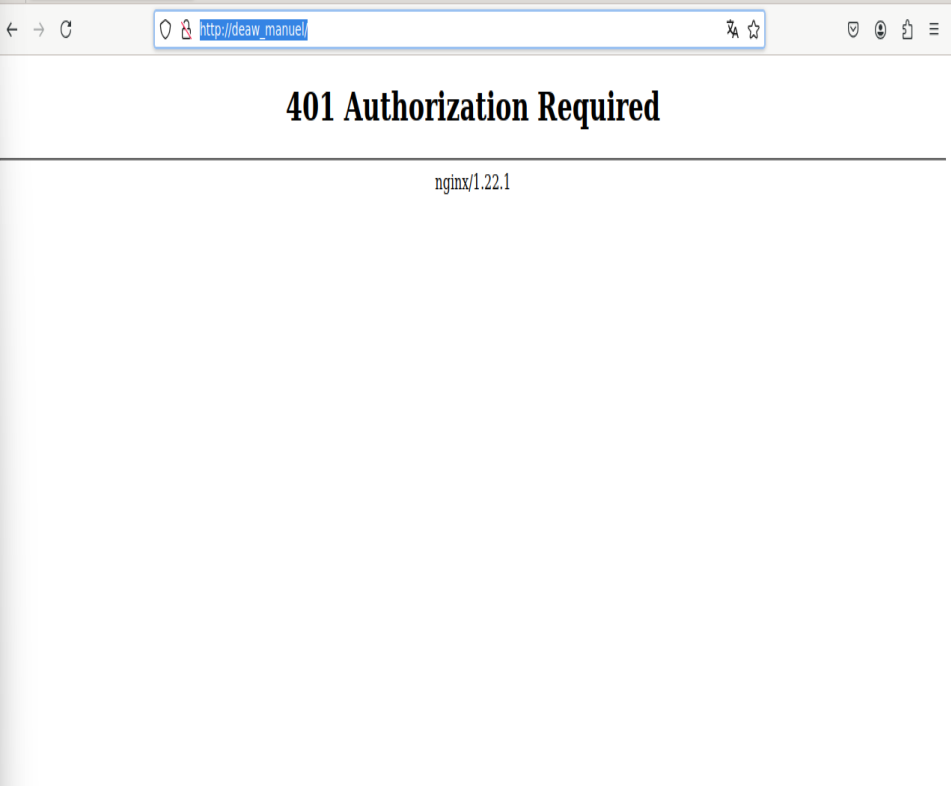
Nos da error 401, que es un código de estado HTTP que significa "No autorizado". Esto indica que la solicitud realizada por el cliente no tiene credenciales de autenticación válidas o que las credenciales proporcionadas no tienen permiso para acceder al recurso solicitado.
Tarea 1
-
Intenta entrar primero con un usuario erróneo y luego con otro correcto. Puedes ver todos los sucesos y registros en los logs access.log y error.log
-
Adjunta una captura de pantalla de los logs donde se vea que intentas entrar primero con un usuario inválido y con otro válido. Indica dónde podemos ver los errores de usuario inválido o no encontrado, así como donde podemos ver el número de error que os aparecía antes
Registro de acceso:
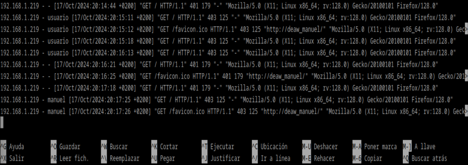
Registro de errores:

Combinación de la autenticación básica con la restricción de acceso por IP
- Permitir o denegar acceso sobre una IP concreta (directivas allow y deny, respectivamente). Dentro del block server o archivo de configuración del dominio web, que recordad está en el directorio sites-available:
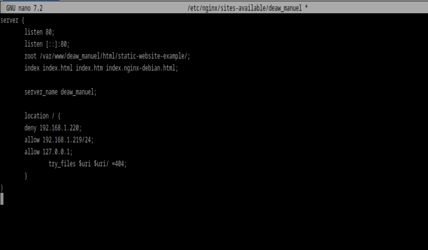
El acceso se garantizará ala IP 192.168.1.219/24, excluyendo a la dirección 192.168.1.220.
La directiva deny all denega el acceso a todo el mundo.
- Combinar la restricción IP y la autenticación HTTP con la directiva satisfy.
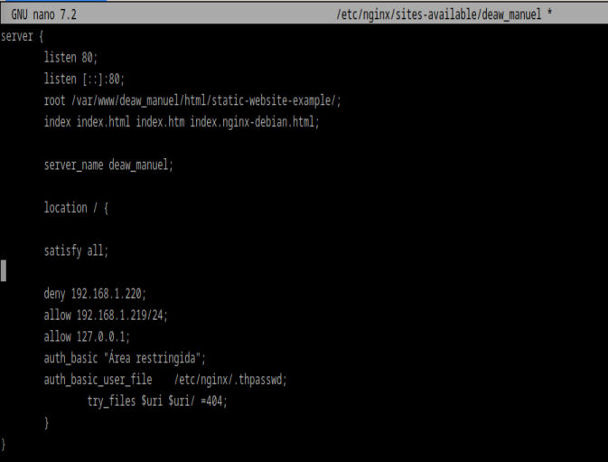
Si establecemos el valor de la directiva a “all”, el acceso se permite si el cliente satisface ambas condiciones (IP y usario válido). Si lo establecemos a “any”, el acceso se permite si se satisface al menos una de las dos condiciones.
TAREAS
TAREA 1
Configura Nginx para que no deje acceder con la IP de la máquina anfitriona al directorio raíz de una de tus dos webs. Modifica su server block o archivo de configuración. Comprueba como se deniega el acceso: - Muestra la página de error en el navegador
- Muestra el mensaje de error de error.log
Denegamos el acceso a nuestra ip:
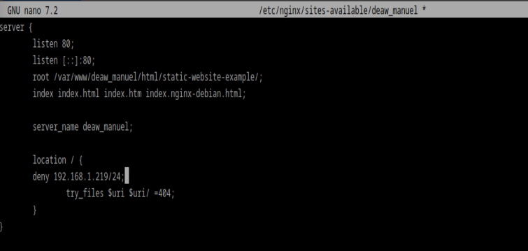
Comprobamos el navegador:
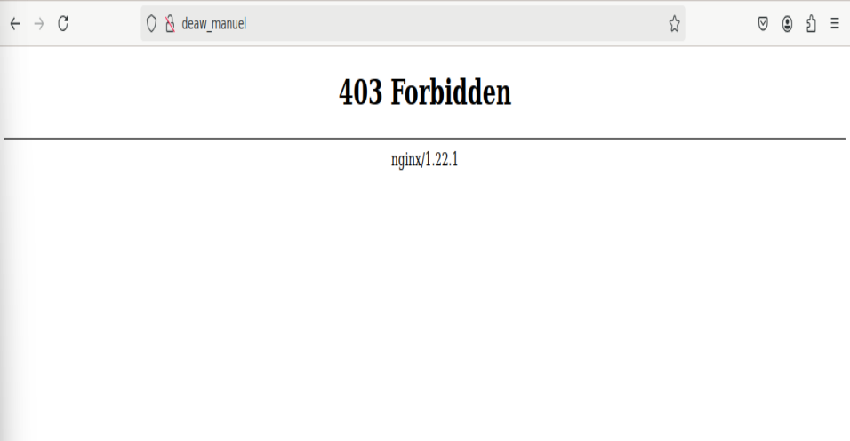
Y por último el registro de error:

TAREA 2
Configura Nginx para que desde tu máquina anfitriona se tenga que tener tanto una IP válida como un usuario válido, ambas cosas a la vez, y comprueba que sí puede acceder sin problemas
Permitimos acceso a nuestra ip y activamos la solicitud de autorización:
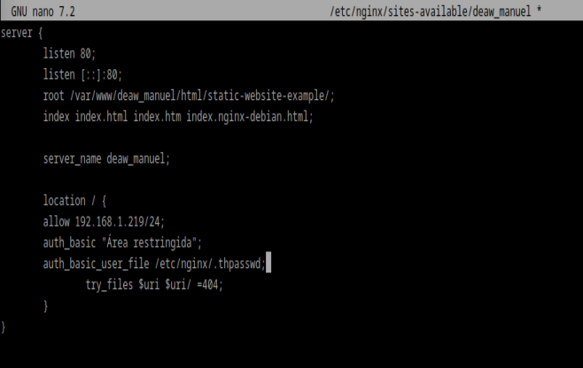
E introducimos las credenciales en el navegador:

CUESTIONES FINALES
CUESTIÓN 1
Supongamos que yo soy el cliente con la IP 172.1.10.15 e intento acceder al directorio web_muy_guay de mi sitio web, equivocándome al poner el usuario y contraseña. ¿Podré acceder?¿Por qué?
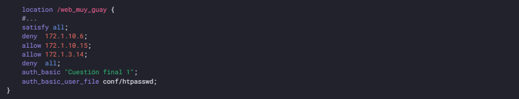
No se podrá acceder, ya que al haber configurado la opción "satisfy all", estás exigiendo que se cumplan ambas condiciones: que la IP esté permitida y que la autenticación sea correcta.
CUESTIÓN 2
Supongamos que yo soy el cliente con la IP 172.1.10.15 e intento acceder al directorio web_muy_guay de mi sitio web, introduciendo correctamente usuari y contraseña. ¿Podré acceder?¿Por qué?
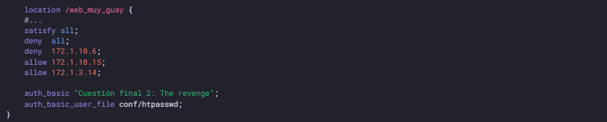
Si ingresas el usuario y la contraseña correctos, podrás acceder al sitio porque cumples con ambas condiciones: la autenticación es válida y tu IP está autorizada.
CUESTIÓN 3
Supongamos que yo soy el cliente con la IP 172.1.10.15 e intento acceder al directorio web_muy_guay de mi sitio web, introduciendo correctamente usuario y contraseña. ¿Podré acceder?¿Por qué?
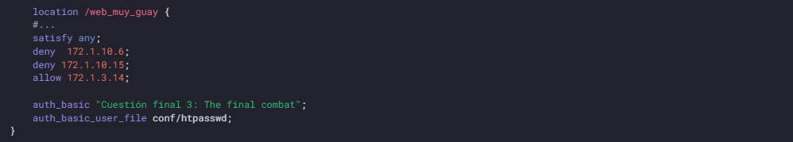
En este caso, con "satisfy any", aunque tu IP esté bloqueada, no podrás acceder a la web porque se está aplicando una restricción de IP que tiene prioridad.
CUESTIÓN 4
A lo mejor no sabéis que tengo una web para documentar todas mis excursiones espaciales con Jeff, es esta: Jeff Bezos y yo
Supongamos que quiero restringir el acceso al directorio de proyectos porque es muy secreto, eso quiere decir añadir autenticación básica a la URL:Proyectos
Completa la configuración para conseguirlo:
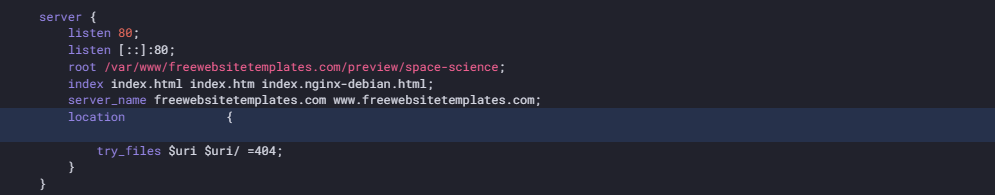
server {
listen 80;
listen [::]:80;
root /var/www/freewebsitetemplates.com/preview/space-science;
index index.html index.htm index.nginx-debian.html;
server_name freewebsitetemplates.com www.freewebsitetemplates.com;
location /proyectos {
auth_basic "Proyectos secretos";
auth_basic_user_file /etc/nginx/.htpasswd;
try_files $uri $uri/ =404;
}
}